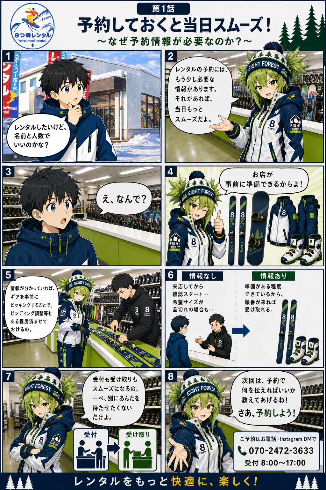
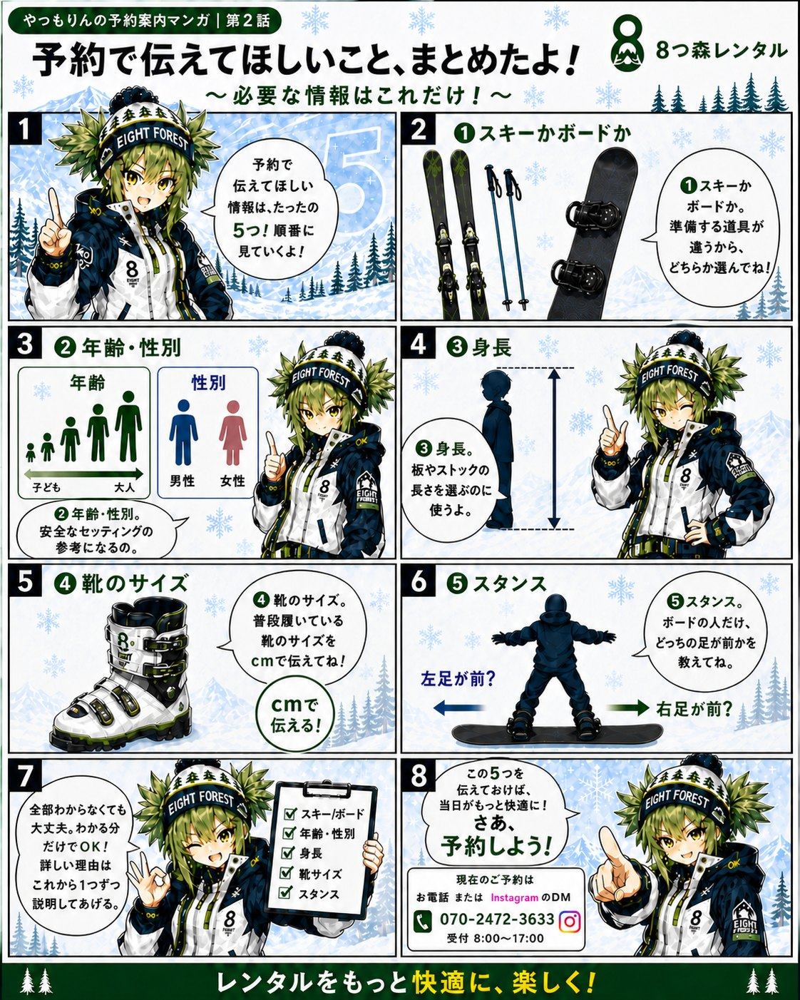

はじめての方へ
スキー・スノーボードが初めてでも大丈夫！8つ森レンタルの看板娘「やつもりん」が、レンタルの流れと準備のコツをご案内します。
やつもりんの予約案内マンガ
看板娘やつもりんが、WEB予約のコツを漫画でご案内します。読みたい話を選んでください。
第1話：予約しておくと当日スムーズ！

第2話：予約で入力してほしいこと

つづきをお楽しみに！
レンタル当日の流れ
1
ご来店・受付
WEB予約された方は代表者のお名前をお伝えください。前日午後2時からのお渡しも可能です。
2
サイズ合わせ
身長を見てスタッフが板をお選びします。ブーツは普段の靴のサイズを目安に、試着でフィット感を確認します。
3
ゲレンデへ！
道具が揃ったら、いよいよ雪山へ。手ぶらでOK、身軽に楽しめます。
4
帰りに温泉
お店は遠刈田温泉のすぐそば。滑ったあとは温泉で温まって帰るのがおすすめです。
5
返却
営業時間内に道具をご返却ください。お支払いは現金のみです。
服装・持ち物のコツ
🧦 靴下はハイソックスがおすすめ
- 膝下までの長い靴下だと、脱ぎ履きの際に脱げず安心です。
- 足首の厚みが重ならないので血流を妨げず、痛くなりにくいです。
- もこもこの靴下はNG。ブーツの中で滑って履きにくくなります。
🧤 自分で用意すると良いもの
- ニット帽・グローブ・ネックウォーマー（セットには含まれません。店頭でも販売しています）
- インナー（動きやすく、汗をかいても冷えにくいもの）
- 日焼け止め（雪面の照り返しは強いです）
🎿 板やブーツのサイズは心配いりません
- スタッフが身長・滑り方に合わせて最適な板を選びます。
- ブーツは普段の靴のサイズでOK。試着で確認できます。
わからないことは、お気軽にお電話（070-2472-3633）または
よくあるご質問をご覧ください。